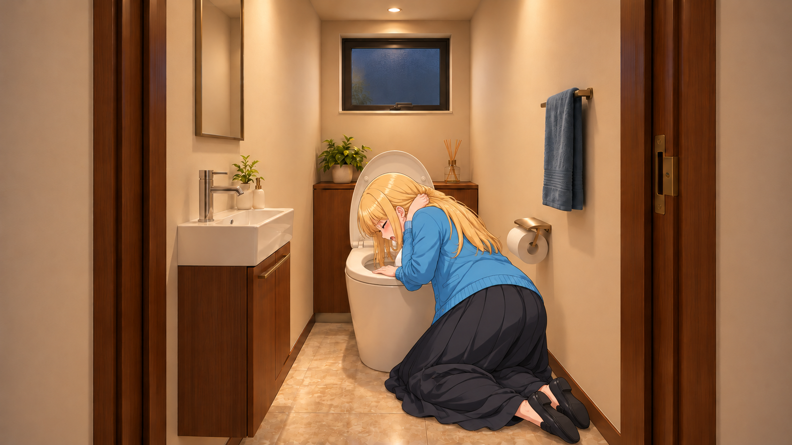
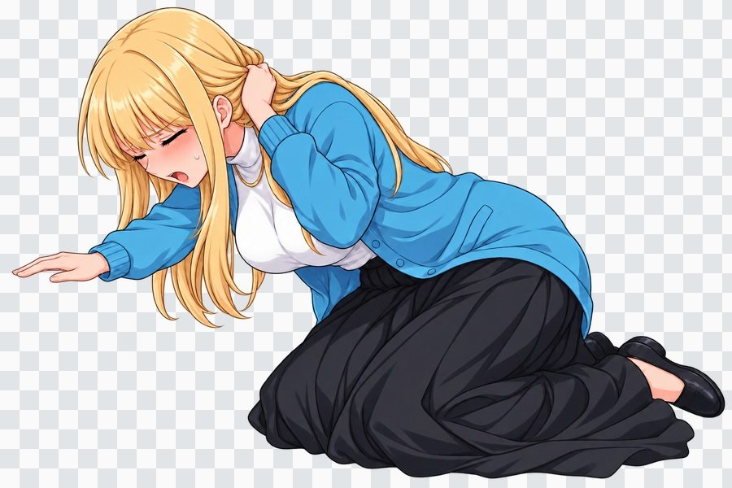

宅飲みの終盤：眠る／気分が悪くなる
既存の「酔い4.png」の人物・服装を参照した成人ヒロインの2場面。内蔵画像生成による新しい姿勢の試作です。登場人物は20歳以上の仮条件。吐いた物の流れを描かず、顔と姿勢でえずく場面を表しています。
前の男子3人との宅飲み ／ 2場面比較 ／ 全プロンプトと参照 ／ アルファ・原本保全・画素差の確認
① 宅飲みの終盤に酔いつぶれて眠る

缶を手から外し、横座りで肩を落として眠る。賑やかな会話から返事が途切れる場面へ。口・目・姿勢が変わった新規試作で、以前の画像を完全固定した差分ではありません。
人物だけの透過PNG ／ 切り抜きを確認
② トイレで吐き気に耐え、便器へかがむ

目を閉じてえずき、髪を片手で押さえ、もう片方の手を便器へ。部屋の狭さに合わせ、上のCGでは姿勢と視点を描き直しています。人物PNGを置いただけの画像ではありません。
背景込みCG ／ 開いた蓋の背景候補
別レイヤー用の人物姿勢案

横向きの人物PNG。上のトイレCGとは姿勢・視点が異なります。既存の正面トイレへそのまま重ねて、手・顔・床をすべて合わせることは未達。
人物の透過PNG最初の生成も比較用に保持。透明部分にRGB色が残っていますが、アルファを有効にした白背景合成では周囲は透明になることを確認。透明PNGをRGBだけで表示した見た目で判定しないよう記録しました。
最初の試作PNG